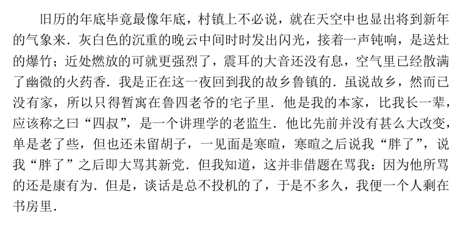
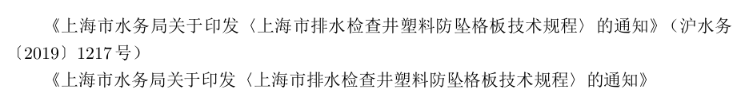

在使用 LaTeX 进行中文文档的撰写中，有一些中文的标点符号用普通输入法输入非常麻烦，比如，知乎 风格的直角引号 「 」 『 』 （U+300C ～U+300F），科技文献特别是数学文献中为了避免与下标 0、o 混淆而使用的实心句号 ．（U+FF0E），以及书名中再次使用书名的单书名号 〈 〉 （U+3008、U+3009），党政机关公文文号中使用的六角形括号〔 〕 （U+3014、U+3015）等等。有些符号尚可以在 LaTeX 中利用相近符号替代，比如 ． 可以直接使用西文的 .，〈 〉 则使用西文的 < > 或使用数学公式中的尖括号 \langle \rangle （这两个符号长这样：）等替代，但这些替代方案的字形（glyph）及其与其他字符之间的字偶间距都是不合适，实际上是一种错误的表达方法，就好像用 x 来表示 ，用“日”字来表示“曰”字 一样。当然，这些符号都有对应的 Unicode 编码，不过，使用 \symbol + Unicode 编码可不是一种合适的解决方案，毕竟，谁脑子里能记得住这么多Unicode 编码呢？ xeCJK 宏包为字体设置提供了 Mapping 选项，在一定程度上可以解决这些问题。本文简单介绍一下实现方法。
xeCJK 提供的映射
xeCJK 提供了四个 TECKit 映射文件，可以在设置字体的时候通过 Mapping 选项来使用它们。分别是：
fullwidth-stop将字体的空心句号。映射成为实心句点．full-stop将字体的实心句点．映射为空心句号。han-simp将字体中的繁体中文字符映射为简体中文字符。han-trad将字体中的简体中文字符映射为繁体中文字符。
后两个文字字符映射需要注意，这里只是字符机械一一映射，在汉字简化过程中，有很多字进行了合并，如“后”和“後”统一简化成“后”，“鐘”和“鍾”统一简化成“钟”，在使用 Mapping=han-trad 选项后不会根据上下文将“后来”改为“後来”，“闹钟”将被改成“鬧鍾”而不是正确的“鬧鐘”，不过这比 Microsoft Word 把“菠萝”改成“鳳梨”，“海内存知己”改成“海記憶體知己”要强得多了……
闲话不多说，切入正题。Mapping=fullwidth-stop 实际上就是实现科技文献中使用实心句点 ． 的方法，只要给正文 CJK 字体加上这一字体特性选项，在书写源文档时使用正常的句号 。，编译后就会将 。 映射为 ． 输出。简单一个 MWE 如下：
1 | \documentclass{ctexart} |
效果如下：

xeCJK 宏包是通过 TECKit 生成的映射文件实现这一功能的，我们在路径 %texmf%/fonts/misc/xetex/fontmapping/xeCJK/ 下可以看到对应四个选项的 *.map 文件和 *.tec 文件。其中，宏包需要调用 *.tec 文件，这个文件由 TECKit 编译对应的 *.map 文件而成。我们只需要制作自己的映射文件，放在 TDS 相应位置即可使用 xeCJK 进行调用。
TECKit 制作直角引号的映射文件
TECKit 是一个执行编码转换以供其他应用程序使用的小工具包。可以在官方网站下载页面下载。压缩包下载后解压在任意位置，进入系统架构对应文件夹，其中的 teckit-compile.exe 即为编译命令。
在这里不对 TECKit 进行详细的介绍（目前我只会照猫画虎，没有深研究这个程序，想介绍也没能力）。先复制 %texmf%/fonts/misc/xetex/fontmapping/xeCJK/fullwidth-stop.map 到这个目录，可以看一下 *.map 文件的内容为：
1 | ; TECkit mapping for conversion of `IDEOGRAPHIC FULL STOP" to `FULLWIDTH FULL STOP" |
源文件内容猜都很容易猜出来表达的是什么，; 显然是注释符（和 Lisp 有点像），LHSName 是说明左侧的符号类型，RHSName 是说明侧的符号类型，在 pass(Unicode) 之后，需要映射的字符 Unicode 编码之间用 <> 分隔，每一行定义一个字符即可。那么我们可以先把这个文件重命名为 raquot.map，内容改为：
1 | ; TECkit mapping for conversion of `Qutation Mark" to `Right Angle Qutation Mark" |
保存文件后，在命令行运行：
1 | teckit_compile raquot.map -o raquot.tec |
文件夹内就编译生成了一个 raquot.tec 文件，我们将这个文件复制到本地 TDS 下（不建议放在系统 TDS 下，升级时恐怕就被删掉了），路径为：%texmf-local%/fonts/misc/xetex/fontmapping/xeCJK/，然后以管理员身份在命令行中运行：
1 | texhash |
等命令运行完毕后，我们就可以在 LaTeX 文档中使用直角引号的映射了。现在把 MWE 改为：
1 | \documentclass{ctexart} |
编译文件后，文档中的 “ ” 就输出成为了 『 』，效果为：
注意，映射文件的效果不能叠加，如果你既需要将 。 映射为 ．，又需要将 “ ” 映射为 『 』，则需要重新创建一个映射方案，在 *.map 中将这些对应映射放在一起，重新编译一个 *.tec 使用。
其他映射的实现
同理，我们可以创建单书名号的映射方案 bookquot，但是这种映射不能全文使用，毕竟单书名号只是用在篇名中引用书名的情况。这种映射通常只是用于宏命令的定义中，通过 xeCJK 宏包提供的 \addCJKfontfeatures 命令临时增加当前 CJK 字体的选项（对于 Mapping 选项只能是改变，Mapping 的多个方案是不支持叠加的）。例如，我在 Corp 宏集内曾定义了这样一个宏命令 \公文 来支持输出公文的标题、文号等。这个宏命令的定义是：
1 | \NewDocumentCommand\公文{s O{} O{} O{} m}{ |
这个命令带三个可选参数，一个必选参数，并提供了带 * 命令形式。必选参数是公文的标题，实际排印的时候，会将标题中的书名号映射为单书名号，并将公文标题放在一对书名号 《 》 之间，带 * 命令将省略发文文号，不带 * 的命令则将按可选参数提供的编号给出公文的文号。举例：
1 | \公文[沪水务][2019][1217]{上海市水务局关于印发《上海市排水检查井塑料防坠格板技术规程》的通知} |
效果如下：

其他映射字符和映射方法，你尽可以充分发挥自己的想象力去实现。Happy ing！